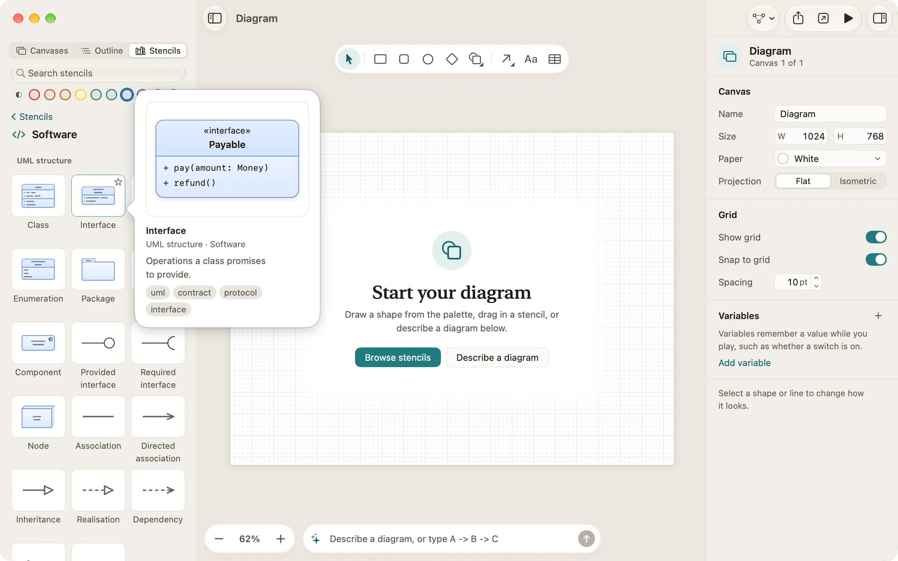
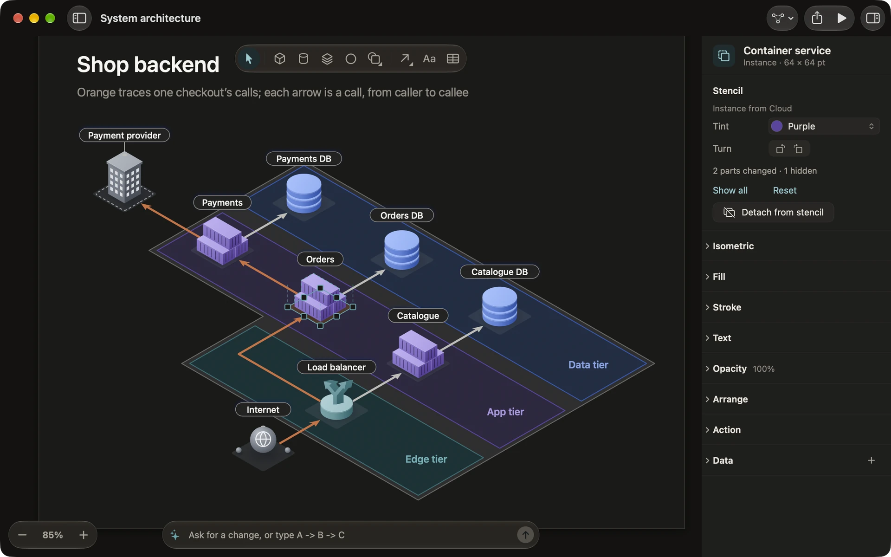

Stencils and tints
A stencil is a ready-made graphic you drag onto a canvas: a flowchart step, a database, a server rack, a phone frame, a person. Diagrove comes with 1,364 of them in 53 libraries, flat and isometric. This page shows how to find one, colour it, keep it up to date and make stencils of your own.
The Stencils pane
Open the sidebar’s Stencils tab. Its first page shows:
- Favourites: the stencils you’ve starred, one row of them.
- Recents: the last stencils you added, one row of them. Show all opens the rest.
- Categories: Basics, Diagrams, Software, Engineering, Isometric, Places, Floor plans, Interface, Infographics and People, each saying how many libraries and stencils it holds, then Your libraries.
Choose a category to see its libraries, each with a heading you can fold, and large tiles under them. ‹ Stencils takes you back, as does Command-[ on the Mac.
Search
Type in Search stencils at the top of the pane. Search looks at each stencil’s name, its keywords, its library and its category, whatever the case or accents, across every category at once. The best matches come first, with the matching letters highlighted. On the Mac, Return adds the best match, and the Down Arrow moves into the results.
Favourites and recents
To star a stencil on the Mac, click the star that shows on a tile under the pointer, or use the tile’s context menu. On iPad, touch and hold the tile and choose Add to favourites. Recents fills by itself as you add stencils.
The preview
On the Mac, rest the pointer on a tile and a preview opens beside it: the stencil larger, its name, its library and category, a line on what it’s for, and its keywords. On iPad, touch and hold a tile to see the same preview above its menu, which offers Add to canvas and your favourites.

Placing a stencil
- Drag a tile onto the canvas to place it where you drop it.
- Click a tile (tap on iPad) to place it in the middle of what you see.
- On the Mac, choose a tile with the arrow keys and press Return.
On an isometric canvas, a stencil lands on the floor under the point where you drop it. Inside a group you’ve entered, it joins the group.
The tint
The row of colours above the tiles is the tint. Choose a hue and the tiles show it, and every stencil you place takes it: each face and part follows from the one colour, lit from the top left, so a whole set of stencils matches without recolouring them one by one. Own colours, the first swatch, keeps each stencil’s own colours.
The tint suits the paper: a light version of the hue on White paper, a dark version on Ink, and the full hue on an isometric canvas.
Instances and overrides
A stencil you place is an instance: it stays linked to the stencil, and the document keeps its own copy, so it opens the same anywhere, even where the library isn’t installed.
Select an instance and the inspector’s header gives its stencil’s name, with Instance and its size under it. Its Stencil section shows the stencil’s name and library, and a Tint well to recolour it later. People stencils also have a choice of five skin tones, and of hair colours where they have hair.
You can change an instance without losing the link. These changes are overrides: its tint, its words, its size, its position, its turn and flips, and each part’s fill, stroke and visibility. Double-click an instance to work on its parts, as in a group, or double-click its words to type new ones. When parts have changed, the section says how many, with Reset to undo them all and Show all to bring hidden parts back.
Updates and detach
When a stencil’s library holds a newer version, after you update Diagrove or change one of your own stencils, Diagrove never changes your diagram by itself. It offers the update: a notice when the document opens, and in the inspector Update 2 instances (with the count) or Keep current. Updating keeps your overrides.
Adding a part to an instance, or removing one, changes how the stencil is put together. Diagrove asks first; Detach makes the instance a plain group that looks the same and no longer follows updates. You can also choose Detach from stencil at the foot of the section or in the canvas’s context menu.
Save as stencil
Select graphics and choose Arrange › Save as stencil…, or the same item in the canvas’s context menu. Give the stencil a name, and choose one of your libraries or a new one (the first is called “My stencils”). The sheet also suggests a role for each part, such as body, glyph or label, from its colours; the roles are what let a tint colour the stencil.
Lines between the graphics stay connected in the stencil. Actions that go to one of this document’s canvases are left out, because other documents don’t have that canvas.
Your libraries
Your stencils live under Your libraries, the last of the categories on the Stencils tab’s first page. At the top of its page, New library makes a library and Import… brings one in. Each library has a menu, from the … button beside its name or its context menu: Rename and Export…, then Show in Finder and Move to Trash on the Mac, or Delete on iPad. The library goes at once, and the notice that follows has Undo. Drag your stencils within a library to reorder them, or drop a stencil from another of your libraries onto one to copy it in.
A library is a .diagrovestencils file, small enough to send to someone. Export… saves one wherever you choose.
- On the Mac, double-click a
.diagrovestencilsfile to open it in a small window that adds it to your libraries, or import it from the pane. - On iPad, import it from the Stencils pane.
- OmniGraffle stencils (
.gstencilfiles) can be imported as libraries the same way, on the Mac and on iPad: every graphic or group on their sheets becomes a stencil.
Importing the same file twice doesn’t make a second copy.

Related
- Isometric canvases: stencils that stand up.
- Drawing: groups, entering a group and the palette colours.